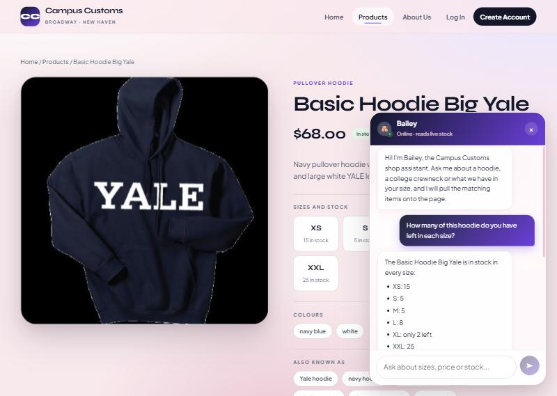
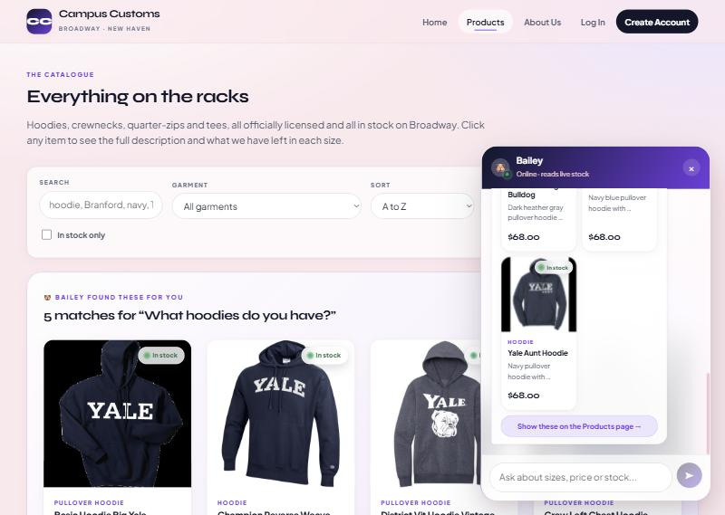
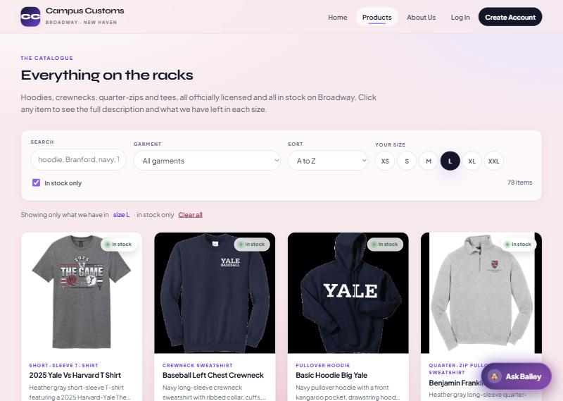

Campus Customs · HW 4 · Problem 11
Three checks run against the running application — React + Vite front end on
:5173, FastAPI + PydanticAI backend on
:8000, reading the real
campus_customs.db. Every screenshot below is an
unedited capture of the live app, and every number the agent states is compared
against the database underneath it.
On the Basic Hoodie Big Yale product page, asked Bailey:
How many of this hoodie do you have left in each size?

Bailey returned a per-size breakdown — XS: 15, S: 5, M: 5, L: 8, XL: only
2 left, XXL: 25 — that matches the inventory
table exactly, and the product card it attached shows the real
$68.00 from catalogue.price. The proof
is visible without leaving the screenshot: the page's own size tiles on the left
(XS 15 in stock, S 5 in stock, XXL 25 in stock) were rendered by the REST API,
the numbers on the right were produced by the agent's
get_stock_by_size tool call, and the two agree. The
agent also volunteered that XL is down to its last 2 rather than reporting a bare
quantity, which is the low-stock wording the prompt asks for.
| Size | Bailey said | inventory table | Match |
|---|---|---|---|
| XS | 15 | 15 | ✓ |
| S | 5 | 5 | ✓ |
| M | 5 | 5 | ✓ |
| L | 8 | 8 | ✓ |
| XL | only 2 left | 2 | ✓ |
| XXL | 25 | 25 | ✓ |
| Price | $68.00 | 68.0 | ✓ |
On the Products page, asked Bailey:
What hoodies do you have?

Asking about a category rather than a named product caused the agent to
search the catalogue and return structured matches, which the front end rendered
as real product cards — each with image, name, price
($68.00 on all five), a short description and a floating live
stock badge. The screenshot shows the feature working on both surfaces at once:
the chat panel on the right holds compact cards ending in
“Show these on the Products page →”, while the page itself has grown a
highlighted strip headed
“Bailey found these for you — 5 matches for ‘What hoodies do you have?’”.
Because both are rendered by the same
ProductCard component, clicking any of them opens the
same single-item detail view built in Problem 3.
| Card shown | Price on card | catalogue.price | Match |
|---|---|---|---|
| Basic Hoodie Big Yale | $68.00 | 68.0 | ✓ |
| Champion Reverse Weave Hoodie 1 | $68.00 | 68.0 | ✓ |
| District Vit Hoodie Vintage Bulldog | $68.00 | 68.0 | ✓ |
| Crew Left Chest Hoodie | $68.00 | 68.0 | ✓ |
| Yale Aunt Hoodie | $68.00 | 68.0 | ✓ |
27 hoodies match in total; the agent showed the best five and pointed the shopper to the Products page for the rest, rather than claiming five is all there is.
From Problem 9 — on the Products page, selected size
L and ticked In stock only.

The L chip is active (filled dark), In stock only
is ticked, the count has dropped from 102 to 78 items, and the
summary line underneath reads “Showing only what we have in size L · in stock
only” with a Clear all reset. This is the availability-aware filter,
not a cosmetic one: it reads
sizes_in_stock, which is computed from the
inventory table, so a product whose L row sits at zero
is removed rather than shown and disappointing the shopper on click. Querying the
database directly returns the same figure — 78 of 102 products have L
stock above zero. The filter state is also mirrored into the URL as
?size=L&stock=in, so the browser Back button steps
through filter changes and a filtered view can be bookmarked or sent to a
customer.
| Filter | Site shows | Database | Match |
|---|---|---|---|
| No filter | 102 items | 102 products | ✓ |
| Size L, in stock | 78 items | 78 products with L > 0 | ✓ |
| URL state | ?size=L&stock=in | — | ✓ |